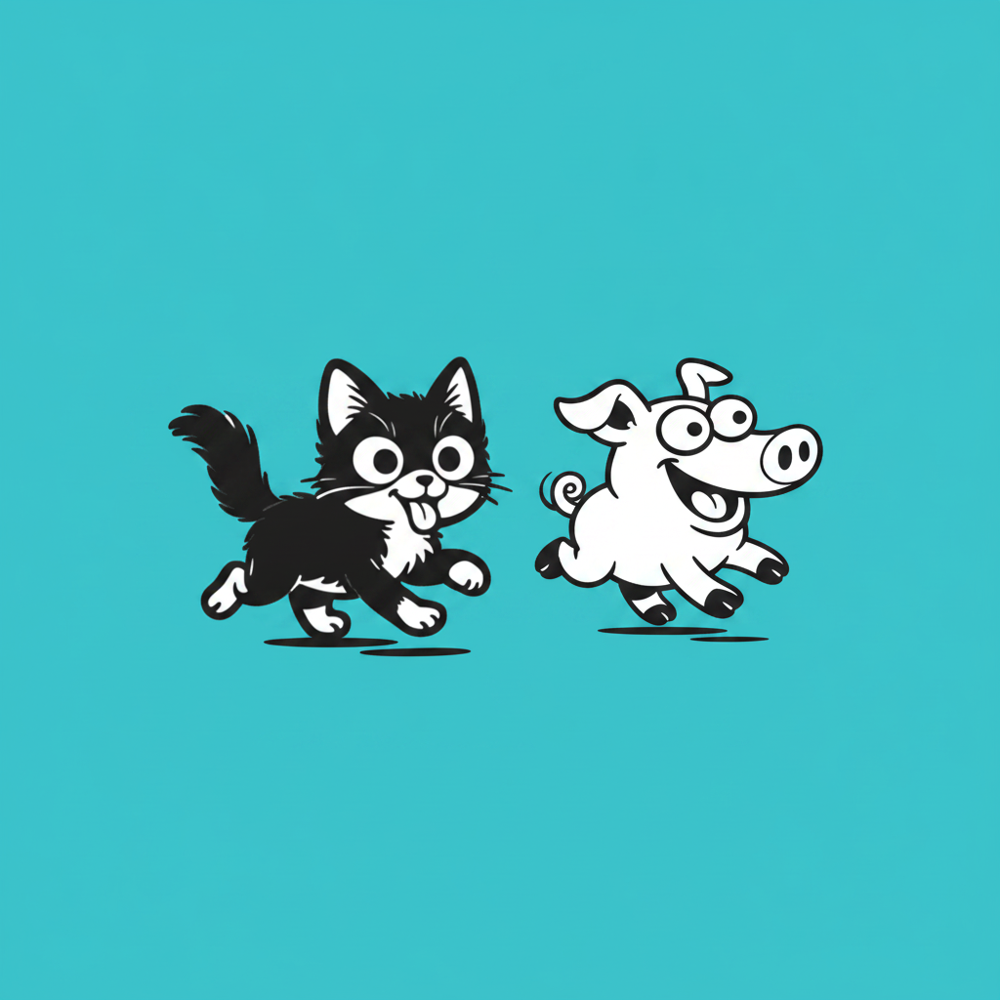

「もし、暗闇の中で時速40kmで走れと言われたら？」——むずかしいですよね。では、「泥の中に埋まった1円玉を、手を使わずに鼻先だけで見つけろと言われたら？」——泥まみれになってしまうでしょう。しかし、身近にいるネコとブタは、これを朝飯前としてこなしています。その秘密兵器こそが「ヒゲ（触毛）」。ただの「毛」ではなく、驚くべき超高性能センサーなのです。
ネコのヒゲ（学術的には洞毛：Sinus Hair）は、頬だけでなく、目の上、顎の下、さらには前足の裏（手根触毛）にも生えています。ヒゲの根元には「パチニ小体」などの高感度な神経終末が詰まった「血洞（けいどう）」という袋があり、ヒゲがわずか数ナノメートル動くだけで、その振動が血洞内の液体を介して増幅され、脳に障害物の位置情報を送ります。

ネコがネズミに飛びかかる瞬間、普段は横に広がっているヒゲが、前方に突き出されます。これを「ウィスカ・フォワード（Whisker Forward）」と呼びます。ネコは顔の目の前（20cm以内）にあるものにはピントが合わず、獲物を仕留める直前は「盲目」に近い状態になります。そこでヒゲを前方に突き出し、獲物を触覚でトラッキングしているのです。
ブタは野生では、土の中にある根茎や虫を探す「ルーティング」という行動をとります。この時、ブタの鼻先にある短く硬いヒゲは、土の抵抗や振動を感知し、大学研究によれば0.5mm以下の凹凸を識別できる精度があるとされています。
ブタは非常に社会的な動物です。鼻とヒゲを相手に押し当てる「ナージング（Nuzzling）」という行動で、相手の体温・皮膚の張り具合・ホルモンの匂いまでを読み取ります。
ネコやブタの脳には、「バレル野（Barrel Field）」と呼ばれる特殊な領域が存在します。1本のヒゲに対して、脳内の1つのバレルが対応しています。幼少期にヒゲを失うと、そのヒゲを担当していた脳の領域は、他の感覚（視覚や聴覚）に乗っ取られてしまいます。これを「脳の可塑性」と呼びます。
| 比較項目 | 🐈⬛ ネコ | 🐷 ブタ |
|---|---|---|
| ヒゲの名称 | 洞毛（Sinus Hair） | 触毛・鼻先触覚毛 |
| 主な役割 | 空間認識・狩り | 食物探索・社会行動 |
| 感知できるもの | 空気の微細な流れ | 0.5mm以下の凹凸 |
| 脳との対応 | バレル野（1対1） | バレル野（1対1） |
| 特殊行動 | ウィスカ・フォワード | ナージング |
| 得意な環境 | 暗闇・夜間 | 土中・泥の中 |
| 🐈⬛ ネコのヒゲ | 空気の流れを感知する「3Dスキャナー」 |
| 🐷 ブタのヒゲ | 0.5mm以下の凹凸を識別する「世界最強のサーチエンジン」 |
| 🧠 バレル野 | どちらの脳にも「ヒゲ専用の処理工場」がある |
| ⚠️ 共通点 | ヒゲは単なる毛ではなく、生存に直結する超高性能センサー |